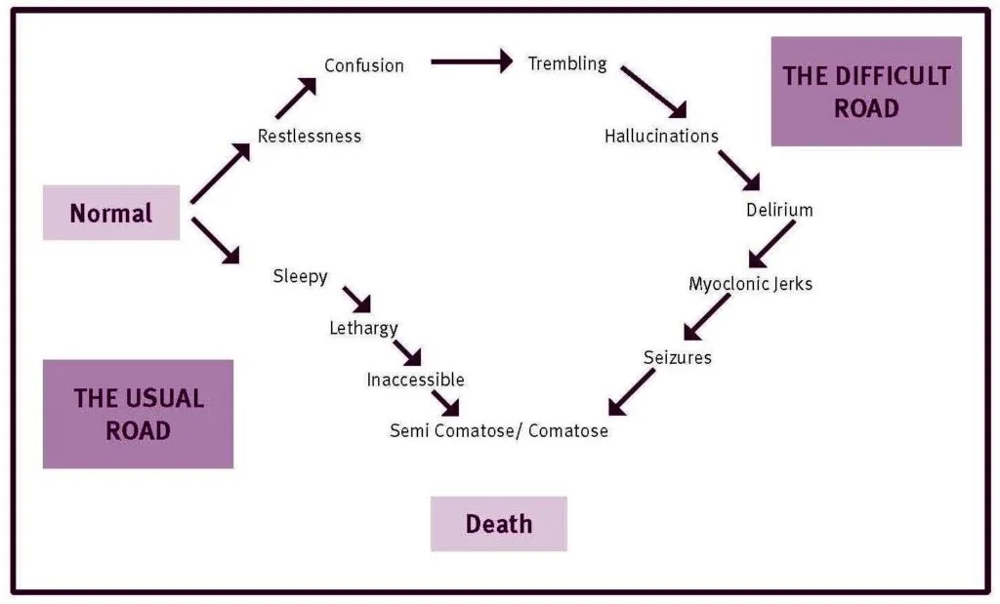

Expanded Nursing Uganda Explanation
Assisted death should be understood beyond a short definition. Link the concept to patient history, focused assessment, common risks, nursing priorities, documentation and evaluation of outcomes.
01 **ETHICS AT THE END OF LIFE**
- Hastened death : It refers to the act of accelerating the dying process as a response to suffering in the context of a life-threatening condition where the patient sees no other way out.
- Assisted Death: This form of euthanasia involves aiding an individual who expresses a desire to die prematurely, either through counseling or by providing a lethal substance.
- Assisted suicide : It involves self-killing with the assistance of another person, often a physician or healthcare provider.
- Physician-assisted suicide (PAS): This term specifically refers to assisted suicide carried out by a physician or healthcare provider.
02 Causes/Reasons for Hastened Death
- Feeling like a burden to others.
- Loss of control over the circumstances of death.
- Lack of social support.
- Perceived loss of dignity.
- Poor quality of life.
- Lack of meaning in life.
03 Approach of a Nurse to a Request for Hastened Death from a Patient
When faced with a request for hastened death, as a nurse, it is important to:
- Ensure a clear understanding of what the patient is asking for.
- Acknowledge and validate the patient’s suffering.
- Actively listen to the patient, paying attention to both verbal and non-verbal communication. Assess the patient for physical, psychosocial, and spiritual distress.
- Collaborate with the patient to develop a comprehensive care plan.
- Inquire about the patient’s physical symptoms, including pain, dyspnea, nausea, fatigue, constipation, insomnia, itching, and other symptoms specific to their condition. Uncontrolled symptoms can contribute to a request for hastened death if the patient feels it is the only escape from suffering.
- Explore the patient’s past experiences with death, which can provide insights into their fears and concerns about their own future.
- Identify signs of depression, as it can be challenging to differentiate between physical symptoms of advanced illness and depressive symptoms.
- Identify a team member who can establish a strong rapport with the patient and gain a deep understanding of their personal history, cultural background, and relationships. This team member can facilitate communication with other healthcare professionals and provide counseling support based on their expertise.
- Understand the nature of the patient’s suffering, considering all dimensions of their experience. Suffering arises when there is a perceived threat to the person’s integrity or continued existence.
- Consider the patient’s personal history, including previous experiences with illness and death, significant losses, and unfulfilled hopes and dreams, to ensure that no sources of suffering are overlooked.
- Actively investigate and effectively treat symptoms.
- Refer the patient to palliative care specialists, anesthetists, interventional radiologists, psychiatrists, and psychosocial and spiritual care providers to ensure comprehensive medical, psychological, and spiritual treatment of the patient’s pain and other symptoms.
04 Ethics and Legal Considerations in Hastened and Assisted Death
- The Controversy : There is an ongoing debate surrounding hastened and assisted death. Advocates argue that terminally ill patients should have the right to die with dignity, while opponents believe that ending one’s own life goes against the principles of the Hippocratic Oath and the sanctity of life.
- Ethical Implications of Physician-Assisted Death : a. Patient Autonomy : Patients possess the ultimate authority over their lives. However, the question of whether physicians should assist them in carrying out suicide raises ethical concerns. b. Persistent Ethical Arguments : Despite legal and political changes, the ethical arguments against the legalization of physician-assisted suicide remain compelling.
- The Right to Choose: a. Dying with Dignity : Advocates assert that terminally ill patients should have the right to die with dignity. Allowing assisted suicide would provide them with a final exercise of autonomy in their dying process. b. Humanizing the Choice : By granting the right to choose when to die, individuals would be recognized as active participants in their own lives rather than being seen as mere spectators waiting for death.
05 Nursing Uganda Clinical Lens
Use Hastened death as a practical nursing topic, not only a memorized definition. Focus on comfort, dignity, symptom control, communication and family support.
- What to understand first: define hastened death, identify the normal or expected pattern, then explain what changes when the patient is unwell.
- Why it matters in care: the nurse must recognize risk early, explain findings clearly, document accurately and know when to escalate.
- How to revise it: connect each point to assessment, nursing diagnosis or care problem, intervention, rationale and evaluation.
06 Assessment Guide
- Pain and other symptoms, function, sleep, appetite, mood, spiritual distress and family concerns.
- Medication response, side effects, wound or skin needs and end-of-life preferences.
- Caregiver burden, home resources and urgent red flags.
07 Nursing Priorities, Rationales and Outcomes
- Relieve distressing symptoms and prevent avoidable suffering.
- Communicate honestly, respectfully and at the patient's pace.
- Support family care, medication access, dignity and continuity.
The rationale for these priorities is patient safety: nursing actions should prevent deterioration, reduce discomfort, support recovery and create clear evidence for the next caregiver.
- Expected outcome: Symptoms are better controlled, patient preferences are respected and the family knows when to seek help.
08 Patient Teaching and Revision Check
- Explain hastened death in simple language the patient or caregiver can repeat back.
- Teach warning signs, medicine or follow-up instructions, hygiene or lifestyle points where relevant.
- For exams, prepare a short answer using: definition, causes or risk factors, signs, assessment, management, complications and prevention.
- For ward practice, document baseline findings, actions taken, patient response and the plan for review.
Illustrations and Diagrams (2)

Related Video Lectures
Watch nursing lecture videos on YouTube for this topic. Opens in a new tab.
Watch on YouTubeExternal link: YouTube may use its own cookies and terms. Nursing Uganda is not affiliated with YouTube.